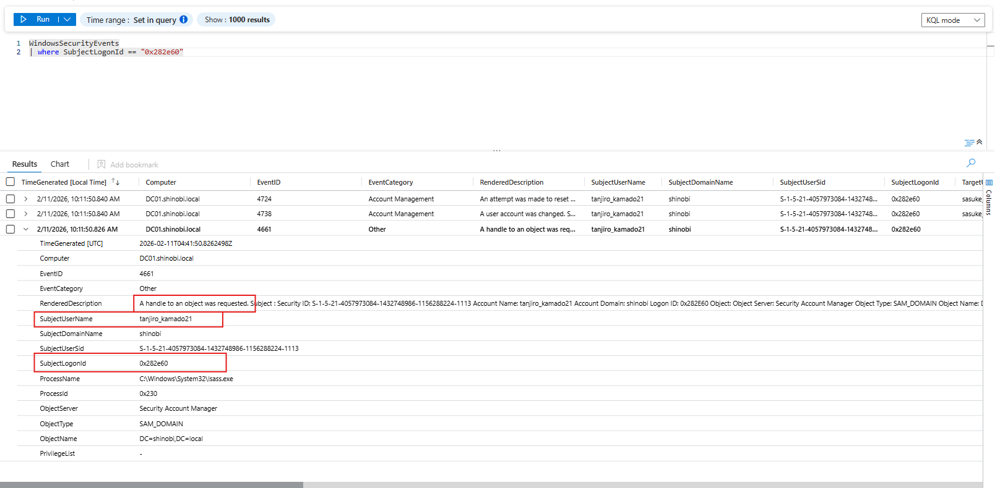

Detection & Telemetry (AllExtendedRights)
Attack Vector: The attacker (tanjiro_kamado21) abused the AllExtendedRights permission (specifically User-Force-Change-Password) to reset the password of sasuke_uchiha99.
Method: The attack was executed remotely using bloodyAD from a Kali Linux machine.
Detection Strategy:
1. Identify: Catch the specific "Password Reset" event (ID 4724).
2. Pivot: Extract the SubjectLogonId (Session ID) from the alert.
3. Attribute: Correlate that Session ID with a Logon Event (4624) to find the source IP and tool artifacts.
Objective: Identify unauthorized password resets.
Logic: We query for Event ID 4724 ("An attempt was made to reset an account's password"). This event is critical because it differs from a standard password change (Event 4723) where the user knows the old password. A "Reset" indicates administrative force.
KQL Query:
WindowsSecurityEvents
| where EventID == 4724
| where SubjectUserName contains "tanjiro_kamado21" // Filter for the suspect
| project TimeGenerated, EventID, Activity="Password Reset", SubjectUserName, TargetUserName, SubjectLogonId
Analysis:
• Actor (Subject): tanjiro_kamado21
• Victim (Target): sasuke_uchiha99
• Anomaly: A standard user (Tanjiro) should typically not have the permission to reset other users' passwords. This confirms the abuse of the delegated right.
• Key Artifact: We capture the SubjectLogonId (e.g., 0x282e60) for the next step.
Objective: Verify what other actions occurred during this specific logon session. Technique: We take the SubjectLogonId found in step 1 (0x282e60) and query for any event sharing that ID.
KQL Query:
WindowsSecurityEvents
| where SubjectLogonId == "0x282e60" // The ID from the previous step
| project TimeGenerated, EventID, EventCategory, RenderedDescription, SubjectUserName
Findings:
▪ 4724: The Password Reset.
▪ 4738: User Account Management (The actual change being applied).
▪ 4661: Handle Requested (Accessing the SAM_DOMAIN object).

Objective: Identify the Source IP and Tool used by the attacker. Logic: We look for the Logon Event (4624) associated with the user tanjiro_kamado21 at the time of the attack.
KQL Query:
WindowsSecurityEvents
| where EventID == 4624
| where TargetUserName == "tanjiro_kamado21"
| where TimeGenerated between (datetime(2026-02-11T10:11:00) .. datetime(2026-02-11T10:12:00))
| project TimeGenerated, TargetUserName, LogonType, IpAddress, WorkstationName
Analysis:
◇ IpAddress: 192.168.56.50 (Confirmed as the Kali Linux machine).
◇ WorkstationName: kali (Explicitly identifies the attacker's hostname).
◇ LogonType: 3 (Network).
◇ Context: bloodyAD (and similar tools like net rpc) perform actions via network protocols (LDAP/SAMR), creating a Type 3 logon. Seeing a Type 3 logon from a Linux host immediately followed by a Password Reset is the "smoking gun" signature of this attack.
{kind=link}
{kind=link}
{kind=link}